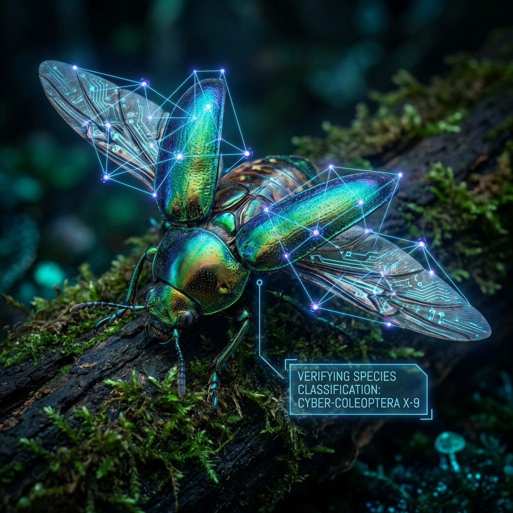
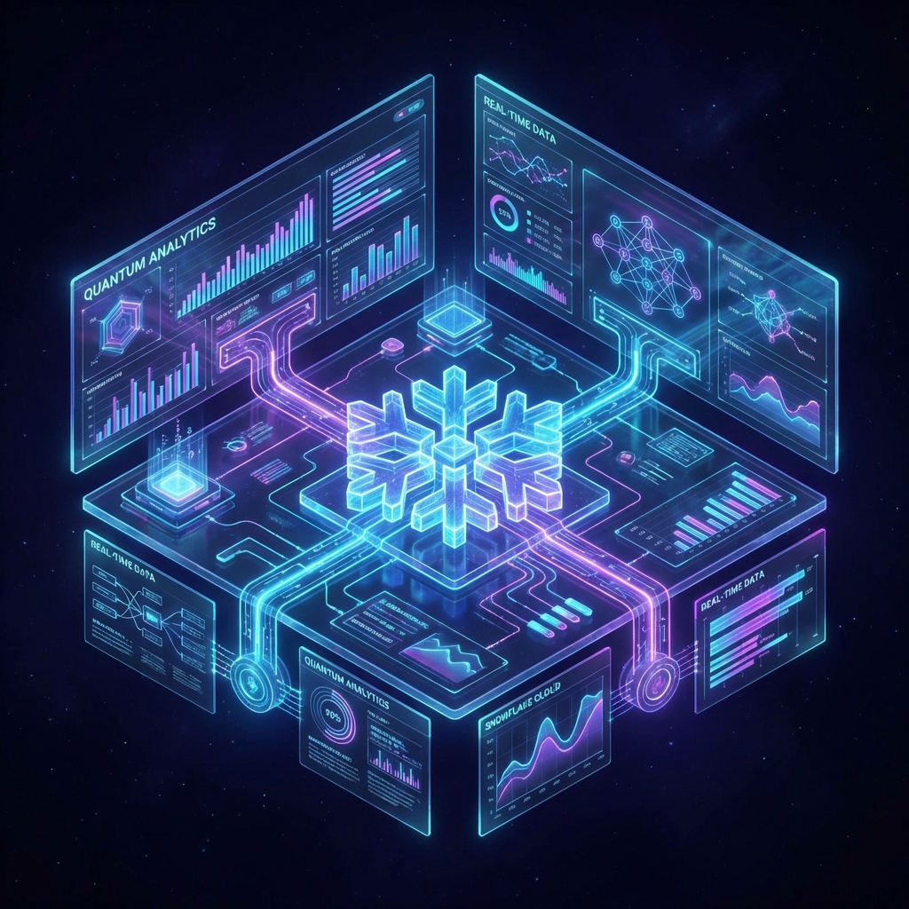
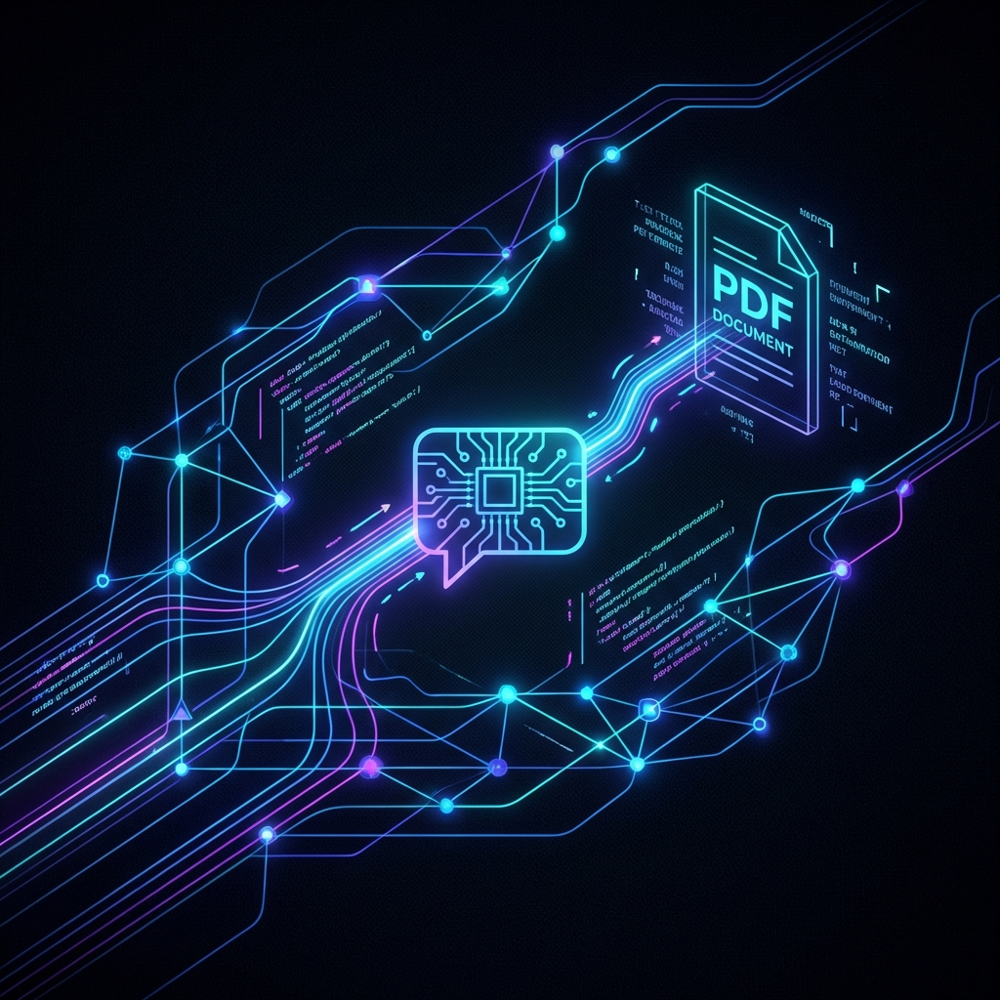

Selected Work
Key Projects

Insect Species Classification
MSc Dissertation project achieving 98.73% accuracy on insect classification using InceptionV3 and transfer learning. Built a custom dataset of 10K+ images.

Customer Analytics Pipeline
End-to-end analytics pipeline using Snowflake, dbt, and Airflow. Implemented custom anomaly detection and hybrid batch+streaming ingestion.

LangChain PDF Chatbot
Information Retrieval System using vector DBs and Google PaLM2 for document-aware Q&A. Integrated with Streamlit UI.

Permitting Service Analytics
Analyzed Environment Agency data to identify operational bottlenecks using Python and Power BI. Engineered features regarding refusal likelihood.